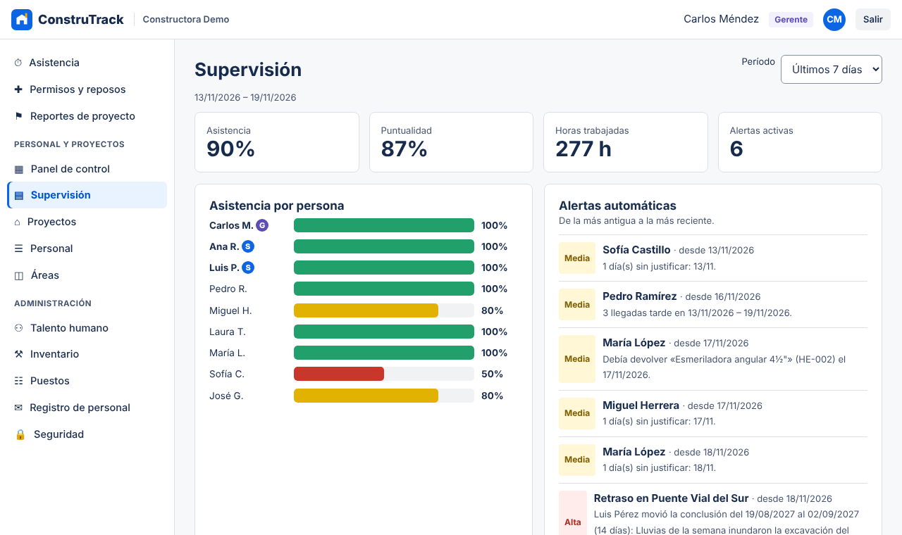
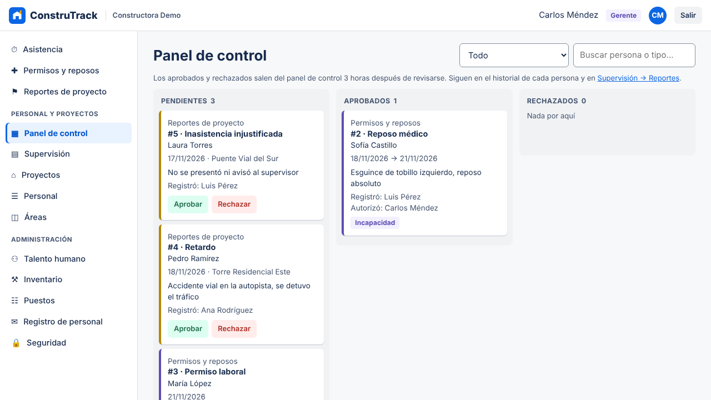
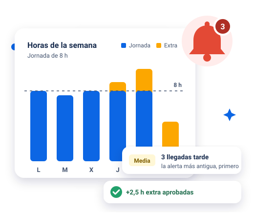
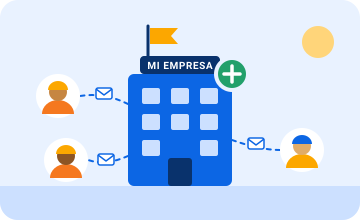
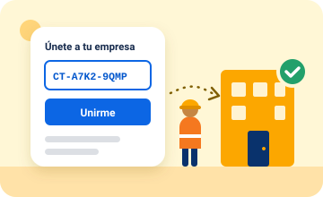

Asistencia verificable
Ubicación en cada marca y código QR que rota cada 30 segundos. Lo que no cuadra pasa a confirmación del supervisor.
Gestión de personal y operaciones por proyecto
Centraliza la asistencia con geolocalización y código QR, los permisos y reposos médicos, los reportes de proyecto, las áreas de trabajo, el inventario de herramientas y los egresos del personal. Cada registro guarda quién lo hizo, cuándo y quién lo autorizó.
¿Ya tienes cuenta? Iniciar sesión



Ubicación en cada marca y código QR que rota cada 30 segundos. Lo que no cuadra pasa a confirmación del supervisor.
Permisos, reposos y reportes con registro de quién los creó, quién los autorizó y con qué nota.
Herramientas y equipos asignados por persona, con fecha de devolución y estado al recibirlos.
Claves cifradas con PBKDF2, verificación en dos pasos para gerentes y acceso según el rol de cada persona.
Plataforma
Desde la primera marca de entrada hasta la conclusión del proyecto: procesos estandarizados, permisos por rol y registros listos para auditoría.
Asistencia
Cada entrada registra la ubicación del teléfono y, si el proyecto lo exige, el código QR rotativo que muestra el supervisor. Las marcas fuera del radio o sin ubicación quedan por confirmar, y el supervisor ve en el mapa dónde se hizo cada una.

Permisos, reposos y reportes de proyecto
El supervisor registra el permiso laboral, el reposo médico o el reporte de proyecto; el gerente lo aprueba o rechaza con una nota obligatoria y su nombre queda como autorizador. El reposo exige médico, matrícula, centro asistencial, tipo de consulta y el documento escaneado.


Alertas y reportes
Retardos reiterados, faltas consecutivas, aprobaciones vencidas, retrasos de proyecto y herramientas sin devolver aparecen como alertas, de la más antigua a la más reciente. La tabla de puntualidad consolida horas trabajadas, horas extra aprobadas y días de incapacidad.

Proyectos, áreas, inventario y talento humano
Cada proyecto avanza de Planificado a En curso y a Concluido, con retrasos reportados y revisados. El gerente administra el inventario, entrega herramientas a cada persona y registra despidos o renuncias con voucher de pago, carta de renuncia y devolución de equipos.


En vivo
Cifras reales de todas las empresas, sin información personal.
Cargando proyectos…
Roles
Tres niveles de acceso, más el puesto y el área de cada persona. Nadie ve más de lo que le corresponde.

Marca en segundos y consulta su historial.

Registra, confirma y reporta desde el proyecto.
Aprueba, decide y audita toda la empresa.
Cómo empezar
Al crear tu cuenta eliges cómo entrar. Las dos toman pocos minutos.

Para dueños y gerentes de proyecto

Para empleados y supervisores
¿Ya tienes cuenta? Iniciar sesión
Configura tu empresa en minutos y suma a tu personal con un código de registro. ¿Dudas? Pregúntale a Arqui, el asistente.